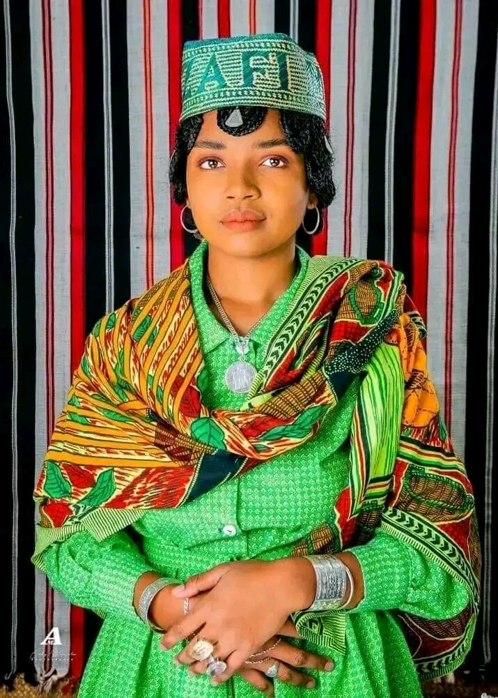
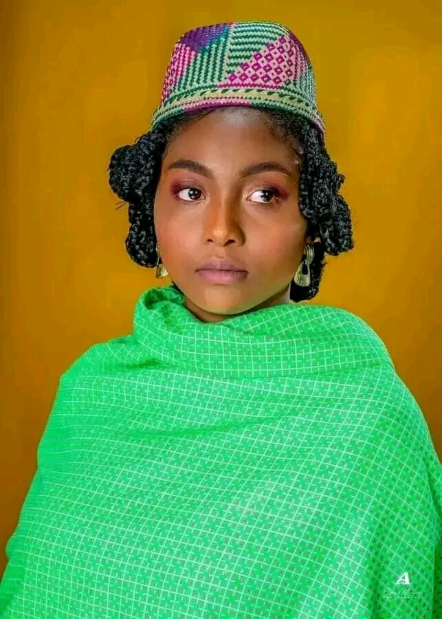
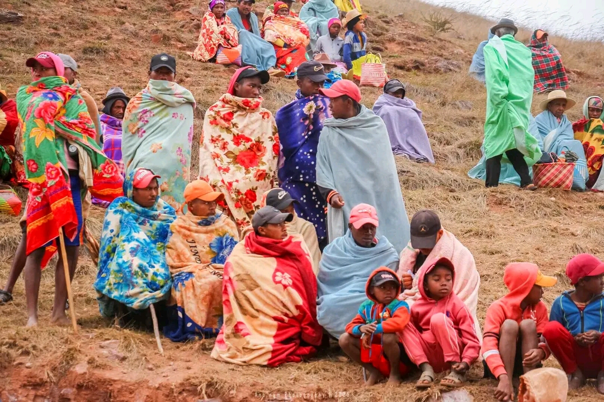

La capitale culturelle de Madagascar
L'habillage traditionnel betsileo est riche en couleurs et en motifs.
Les couleurs traditionnelles betsileo incluent des tons de rouge, de bleu, de vert et de jaune.
Les motifs traditionnels betsileo incluent des dessins géométriques, des motifs de feuilles et des représentations d'animaux.
Les Betsileo sont connus pour leurs tissus traditionnels, tels que les lamba et les akanjo.


